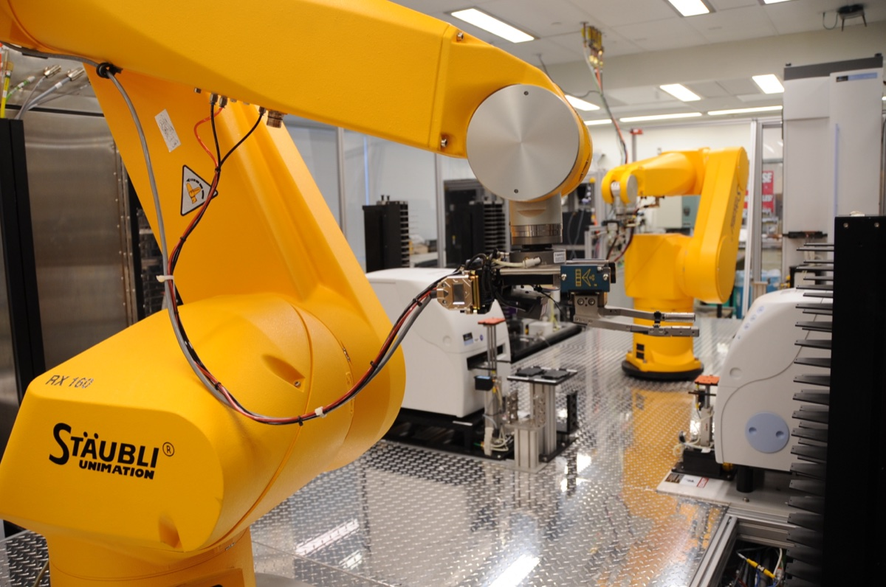

Executive Summary
Four labs received the same rhodium catalyst and, following a protocol they had agreed on in advance, each ran the same reaction that turns carbon dioxide into fuel. Yet each lab produced a different amount of carbon monoxide, the target product, and a different amount of methane, the byproduct. Published in Nature Catalysis in July 2026, this round-robin study shows head-on that experimental data meant to feed an AI can wobble simply by moving from one lab to another. This piece looks at where that divergence came from and what it means for AI training data.
The cause was unexpected. It was neither the algorithm nor the data-cleaning step. Among several small differences, the one that mattered most was how hard the reaction mixture was stirred, its stirring intensity. Even when a protocol says "stir the reactants," how hard to stir varied from bench to bench, and that difference was baked into the data. Pool four datasets holding four different outcomes, and an AI model cannot tell the true signal apart from lab-to-lab variation.
The Pebblous blog has covered reproducibility many times, but usually as a question of "can we rerun the tool." This study points one step further upstream: quality already diverges at the bench where data is born. If AI-Ready Data is decided not at the cleaning stage but in the protocol at the moment data is made, then where should quality control begin? Let's follow that question through.
Four Labs, One Catalyst, Different Yields
To use AI to predict catalysts that turn carbon dioxide back into useful fuels such as carbon monoxide, you first need experimental data on those catalysts. The team led by the SLAC National Accelerator Laboratory decided to check one thing before piling up data: when several labs each test the same catalyst, do they really get the same result? A model's reliability can never exceed the reliability of the data it learns from.
Four institutions took part: SLAC, Penn State, Stanford, and UC Santa Barbara. Each lab received the same rhodium-based catalyst and the same pre-agreed protocol, and each independently ran the same reaction converting carbon dioxide to carbon monoxide. This practice, where multiple labs test the same subject and cross-check one another, is called a round-robin. If the standard holds, the four labs' data should overlap.
They did not overlap. The amount of carbon monoxide, the target product, and the amount of methane, the byproduct, differed from lab to lab. Same catalyst, same protocol, and yet the data did not agree. Corresponding author Adam Hoffman, a researcher at SLAC, called it "an eye-opener" in the SLAC announcement. Even the research team had not expected the divergence.

The Culprit Was Stirring, Not the Algorithm
The team traced back why the results split. The cause was neither the AI model nor the post-processing that tidies up data. Several subtle differences in conditions overlapped, but the one that contributed most was how hard the reaction mixture was stirred, its stirring intensity. A single physical condition in the lab ended up governing the quality of the whole dataset.
Even when a protocol says "stir the reactants," how hard to stir splits at the fingertips of each bench. Change the stirring intensity and you change how much the reactants and catalyst meet, and with it the ratio of products. Written down it is the same procedure, but the value the hand actually carries out was a different number in each lab. That is the gap between the words of a standard protocol and its actual execution.

The four labs' data converged only after they standardized the reactor design, the operating procedures, and the experimental conditions far more tightly. Put differently, what made the data trustworthy was not a better algorithm but stricter experimental control. The fix for the quality problem lay not after the data entered the computer, but on the bench where the data was made.
A Machine Can't Learn from Data That Disagrees
This finding matters because AI was the starting point of the experiment in the first place. Catalysts lose performance over time. But this degradation usually plays out over months to years, while the time available to watch it in the lab is typically only days. What the team wanted from an AI model was the ability to predict long-term behavior from short observations. For that, the data fed to the model has to come out consistently even when the lab changes.
First author Selin Bac, a postdoctoral researcher at UC Santa Barbara, said we should be careful about what data we feed AI models in the first place, and that researchers themselves need to recognize how inconsistent experimental data undermines the reliability of the results. A machine cannot properly learn from four datasets holding four different outcomes.
An AI model cannot, on its own, separate the true signal in the data from the noise introduced by lab-to-lab variation. Learn yields that wobble because of differences in stirring intensity, and the model learns the habits of the four labs rather than the properties of the catalyst. However much data there is, if that data contradicts itself, the learned prediction merely converges on an average that no lab can reproduce.
The core point: what makes learning possible is not the volume of data but its consistency. Data that holds a different result in each lab never becomes a trustworthy learning signal, no matter how much of it you gather.
Quality Is Decided at the Bench, Not in Cleaning
The Pebblous blog has covered reproducibility more than once. We pointed to the missing provenance of closed models, and we examined the problem that only about half of the code published in papers actually reproduces. What those discussions share is that they treated reproducibility as a question of "can we rerun the tool." Model or code, they asked whether an already-built tool can be re-executed under the same conditions.
This study points one step further upstream. The place where reproduction split was not the software but the bench. Discussions of data quality usually focus on "how do we clean it after collecting it": filling in missing values, filtering outliers, aligning formats. This study looks at what comes before. At the moment data is born, the equipment settings and operating conditions have already decided its quality. Once a value like stirring intensity, which never makes it into the words of a protocol, is inscribed into the data, the cleaning stage cannot undo it.
So reproducibility is not one problem. Reproducing the model, reproducing the code, and reproducing the experiment where the data itself is made are stacked layer upon layer. If AI-Ready Data has largely meant a cleaned format, this study pulls the definition down one more notch: the protocol at the moment data is born must come into scope as something to be managed.
Beyond Catalysis, Toward Bench-Grounded AI4Science
Stirring intensity is a fine detail of catalytic chemistry, but the structure repeats identically across any experimental science. Screening drug candidates, synthesizing new materials, testing battery electrodes: all of them carry subtle differences in handling that the protocol never records. That difference leads to data disagreement, and the path by which disagreeing data breaks learning does not discriminate by domain.

The prescription the team offered was not an algorithm either. It was to standardize the reactor design, the operating protocol, and the experimental conditions, and they said they hope this work becomes a community guide for how to design experiments for machine learning. Seen through the lens of an AI-Ready Data checklist, "standardizing the experimental protocol" rises to step zero, ahead of data collection. Before deciding what to clean, you must first control what was made and how.
In the end it gathers into a single question: can you prove "under what conditions and how" this data was made? Which lab, on what equipment, stirring how hard, and when did it obtain that value? This is the provenance of data, and reproducibility at the bench is ultimately the work of preserving that provenance. Data whose source and conditions cannot be traced struggles to become a learning signal an AI can trust, however much of it there is.
Editor's Note
Pebblous has worked on verifiable data that makes it provable "what data is made of and how." This study shows that the same concern reaches not only AI in industry but the science of the lab bench itself. Before cleaning, record and standardize the conditions from the moment data is born. That this is the first button of AI-Ready Data was confirmed once again by the divergent yields of four labs.
References
Academic Paper
- 1.Bac, S. et al. (2026). "Quantifying uncertainty in catalyst activity and deactivation during CO2 hydrogenation via round-robin testing for data-driven modelling." Nature Catalysis, 9.
Institutional Press
- 2.Zandonella, C. (2026). "For AI to Drive Science Discoveries, Highly Reproducible Data Is Key." SLAC National Accelerator Laboratory News.
- 3."Study Finds Reproducibility Is Key to AI-Driven Science." Stanford Report (2026).